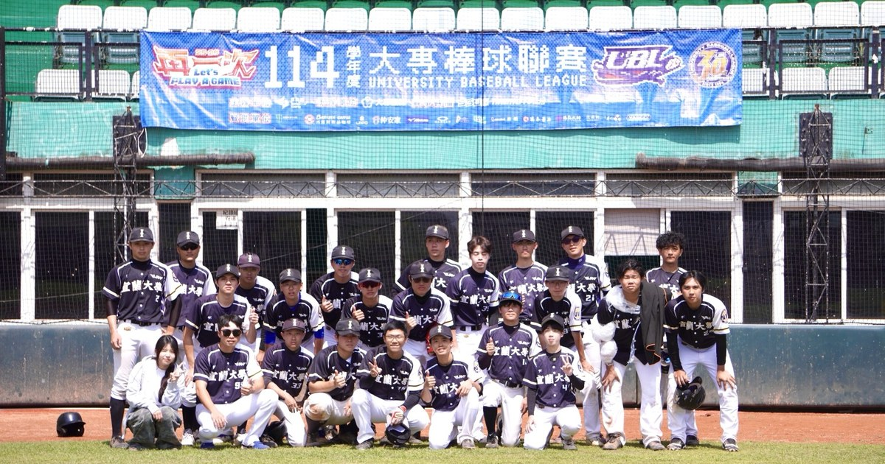

1～7 局｜點擊輸入好壞球與打席結果｜職棒規則
有指定打擊（DH）時，投手只需填這裡，不必排進打線。
請填寫背號與姓名｜先發投手請填背號（需與打線中的背號相符）
存檔內容（手機請長按全選複製，或貼上後按「從文字還原」）
存檔內容為整場比賽文字紀錄（逐球經過、比分、成績）｜非程式碼
* 守備更換 PH 代打 PR 代跑｜可改守備位置
可左右滑動｜可改姓名與守備位置（攻守雙方皆可）
顯示守備方投手｜暴投・投手犯規會計入
點擊壘包可手動開關跑者｜盜壘／進壘可指定跑者｜壞球綠燈・好球黃燈・出局紅燈